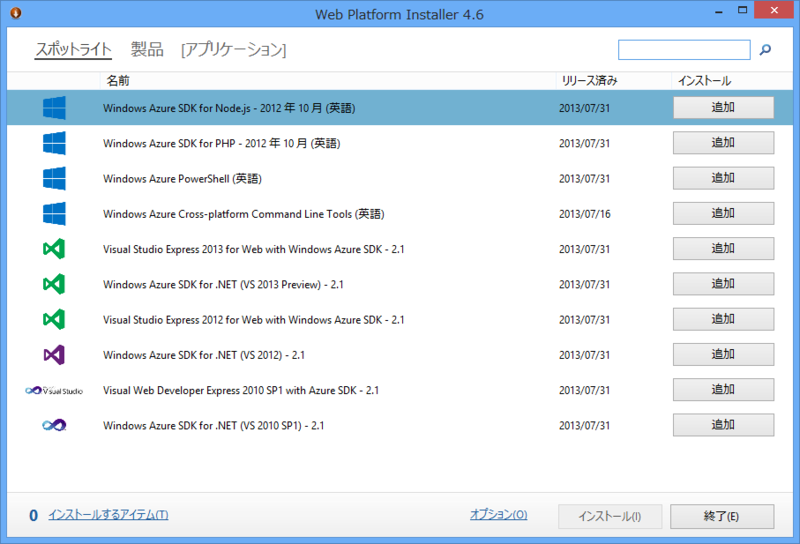

Web Platform Installer 4.6
公開日：

新しいのがリリースされていたなんて、全然気づいてませんでした（7月30日付け）。「Web PI 4.5」がすでにインストールされている場合は、起動時にアップデートの案内が表示されます。どこかに更新点が書いてあればいいのだけど……。

更新して起動してみても、とくに新しいところは見当たらず。「Visual Studio 2013 Express for Web with Windows Azure SDK 2.1」（ながっ！）というのが気になる程度ですかね。